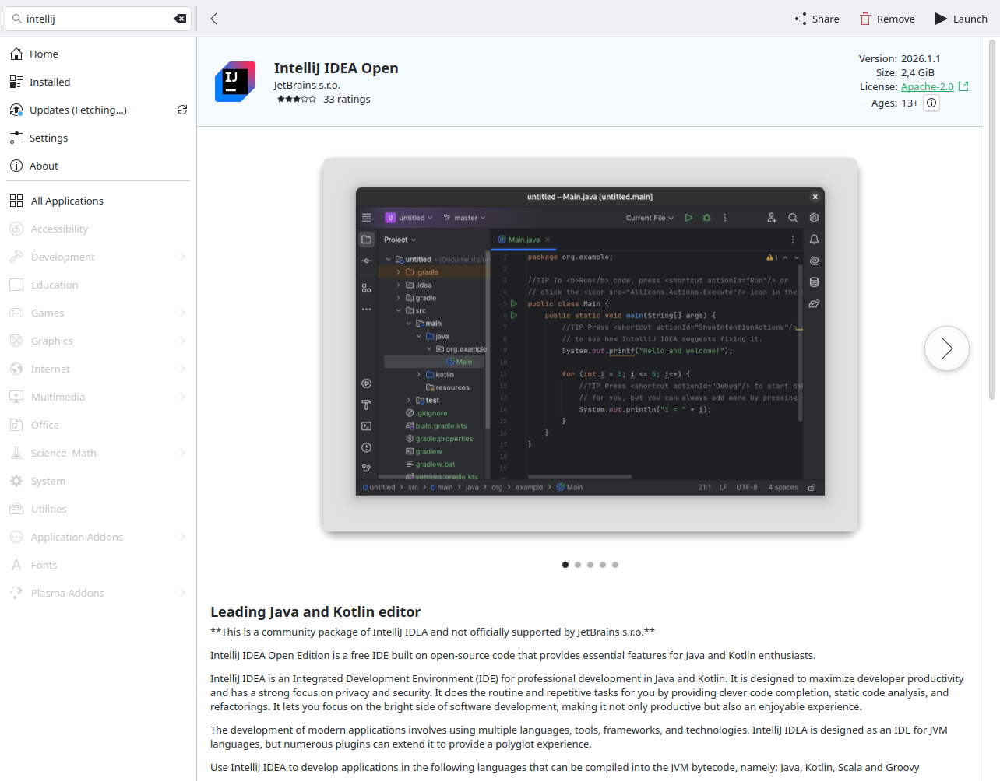
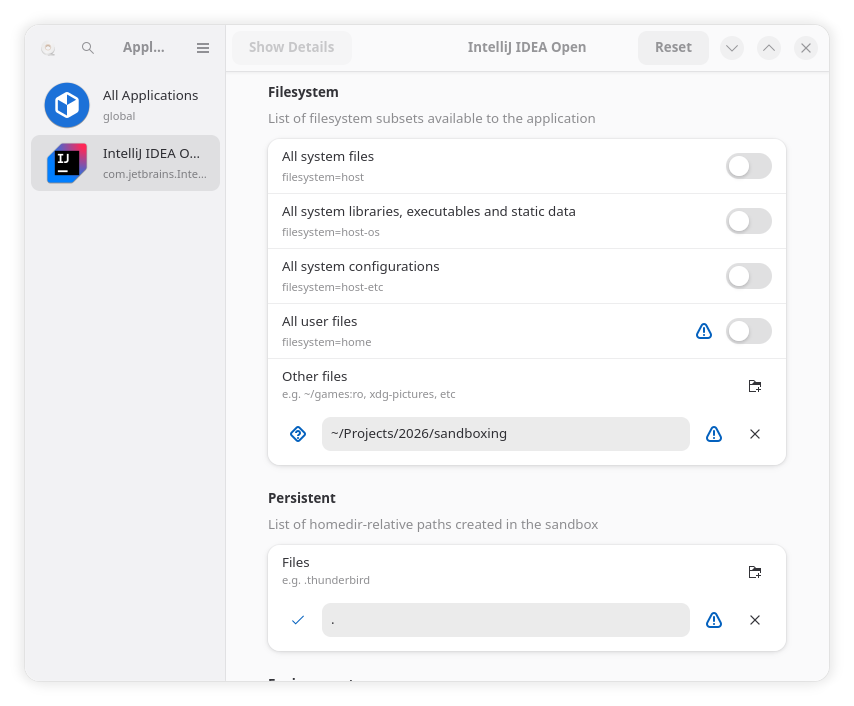
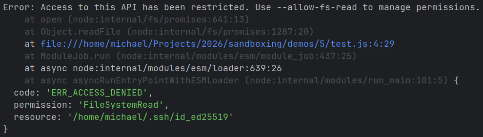
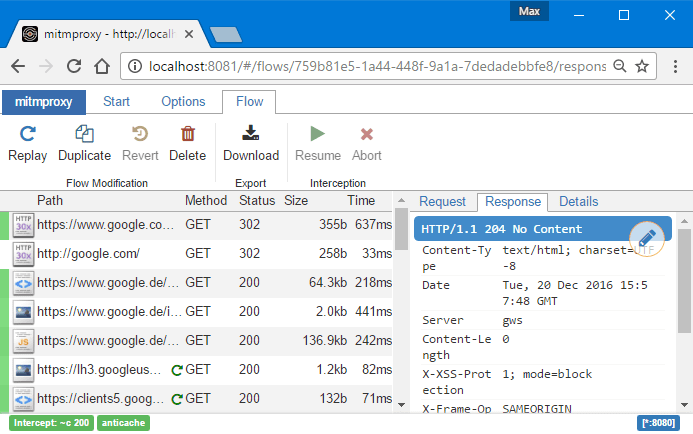

Sandboxing gegen Supply-Chain-Attacken
Michael Zugelder
2026-05-07
Überblick
Bestandsaufnahme
Sandboxing mit Demos
... und noch viel weiter!
Zielgruppe: Fortgeschritten
Bestandsaufnahme
Supply-Chain-Security
Wie schlimm ist es?
PyPI verteilt Malware (z.B.
PyTorch-nightly ,
PyTorch Lightning , LiteLLM ,
num2words , elementary-data )
Maven(Central) verteilt Malware (org.fasterxml.jackson.core:jackson-databind ,
com.github.codingandcoding:maven-compiler-plugin )
Microsoft verteilt Malware (npm):
Juli 2025 : eslint-config-prettier, got-fetch, ...
August 2025 : nx
September 2025 :
chalk, debug, ansi-styles, ...
November 2025 :
posthog, postman, @asyncapi, ...
März 2026 : axios
April 2026 : @cap-js (SAP ), Bitwarden CLI, ...
Debian (unstable) verteilt Malware (xz )
Schutzziele
Schutz vor 13-Jährigen, die F12 drücken können?
Schutz davor, dass hunderte/tausende unbezahlte Freiwillige niemals auf eine Phishing-Mail
hereinfallen?
Schutz vor "Security"-Produkten, die oft mit viel zu hohen Privilegien laufen und peinlichste
Schwachstellen aufreißen? (SolarWinds, Ivanti, Cisco, F5, SonicWall, TrendMicro, Microsoft Malware
Protection Engine, ...)
Schutz vor organisierter Kriminalität? (Ransomware, ...)
Schutz vor Geheimdiensten?
Schutz vor US-Firmen/Behörden? (FISA section 702, CLOUD act, National security letters, ...)
Gängige Gegenmaßnahmen
Dependency-Pinning
Pakete nicht schon Code allein beim Installieren ausführen lassen
Updates nicht sofort machen
Gegenmaßnahmen
Dependency-Pinning
Grundidee: Abhängigkeiten exakt im Repository definieren
Absolut sinnvoll und notwendige Voraussetzung.
Aber: kann Updates verlangsamen (Tools wie Renovate helfen)
Teufel im Detail:
GitHub-Actions und Docker-Images müssen über Digest gepinnt werden
Manche Entwicklungs-Tools installieren trotzdem neueste Versionen
Korrektes Dependency-Pinning
Docker
docker.io/node ❌docker.io/node:latest ❌docker.io/node:24.15 ❌docker.io/node:24.15.0 ❌docker.io/node:24.15.0@sha256:3a198147c320bc4… ✅
GitHub Actions
actions/checkout ❌actions/checkout@main ❌actions/checkout@v5 ❌actions/checkout@v5.0.0 ❌actions/checkout@08c6903cd8c0fde910a… # v5.0.0 ✅
Entwicklungstools, die ungefragt brandneue Versionen installieren
Gegenmaßnahmen
Code nicht während der Installation ausführen
$ podman exec -it demo3-ide ~/Projects/2026/sandboxing/demos/evil.example
demos/1/some-project$ npm install
$ npm install ../is-even
$ npm start
# is-even angreifen (postinstall)...
$ npm config set ignore-scripts=true
$ npm install ../is-even
# nochmal is-even angreifen (import):
$ npm test
$ npm start
Gegenmaßnahmen
Updates kurz verzögern (min-release-age)
Hätte bei
event-stream
oder
node-ipc
nicht geholfen
Firmen nutzen oft (sinnvollerweise) einen lokalen Mirror. Dort kann noch Malware liegen, obwohl sie
Upstream längst blockiert wurde.
LLM-basierte Scanner vs Prompt-Injection
Verzögert Security-Updates , macht Notfälle wie bei der RCE in
react-server-dom-webpack
komplizierter
aber: sehr effektiv für reine Development-Tools (die nur mit vertrauenswürdigen Daten umgehen),
z.B. Single-Page-Applications
Gegenmaßnahmen: Sandboxing
Sandboxing: Code in einer isolierten Umgebung mit begrenzten Rechten ausführen
Kann Angriffsfläche reduzieren und den Explosionsradius begrenzen
Technische Mittel zur Isolation
Prozesse : RAM-Isolation, separate Umgebungsvariablen, etc., bringt das Betriebssystem automatisch
mit, zusätzlich In-Process-Sandboxing möglich
Nutzeraccounts : unterschiedliche Berechtigungen (hauptsächlich im Dateisystem)
Container : können Dateisystem- und Netzwerk-Zugriff einschränkenVirtuelle Maschinen : helfen gegen Kernel-Exploits
Physische Maschinen : helfen gegen Hypervisor-Exploits und Hardware-Schwachstellen
Container
Sieht man oft in der Praxis
Ziemlich leichtgewichtig, nahezu keine Performance-Nachteile
Meiner Meinung nach wichtigste Maßnahme (Preis/Leistung) und super Ausgangspunkt für weitere
Verbesserungen
Demo 2
Entwicklungs-Sandbox mit Flatpak


Demo 3
Entwicklungs-Sandbox mit (Dev-)Containern
Gotchas:
Browser-Alternative: wl-copy
Container: Podman in Podman braucht etwas Config
Port-Forwarding von localhost-Sockets funktioniert nicht
Habe keine guten Erfahrungen mit DevContainer + IntelliJ gemacht
$ podman compose --progress=plain --project-directory ~/Projects/2026/sandboxing/demos/3 up --build --detach
Nutzeraccounts
Separate Nutzeraccounts können gut zur Isolation benutzt werden, auf Server-Betriebssystemen seit ~1970
üblich
Auf Desktop-Betriebssystemen leider oft hakelig
Selbstverständlich: nicht als root arbeiten
bei der täglichen Arbeit kein root brauchen
Stolperfalle: i.d.R. ist Zugriff auf Docker-Daemon = root
Demo 4: Podman hat bessere Defaults
Projekte von unterschiedlichen Kunden sollten IMO mindestens durch separate
User-Accounts (ohne alltäglichen root-Zugriff) isoliert werden
$ /usr/bin/docker run --interactive --tty --rm alpine
# ls -al /etc
$ /usr/bin/docker run --interactive --tty --rm --volume /etc:/etc alpine
# ls -al /etc
# touch /etc/thisisbad
$ podman run --interactive --tty --rm --volume /etc:/etc alpine
# ls -al /etc
# touch /etc/thisisbetter
Prozesse
In-Process-Sandboxes
Nutzt ihr alle täglich und sind super-praktisch, z.B. JavaScript-Runtimes oder WebAssembly
Maschinencode wird nicht direkt ausgeführt
Code wird interpretiert/generiert/verifiziert und kann I/O nur über explizit gesicherte APIs durchführen
Deno und Node.js haben eine integrierte Sandbox, womit man weniger vertrauenswürdiges JavaScript erstmal
(mehr oder weniger) geschützt starten kann
Demo 5: Sandbox von node und deno

Sich beim Entwickeln damit alleine mit In-Process-Sandboxing vor Malware zu schützen halte ich für
unrealistisch (zu viele unterschiedliche Prozesse, oft nativer Code Teil von Tests/Builds)
Oft scheitern Versuche, eine sichere Sandbox im Prozess zu bauen, z.B.: Java Applets (1 , 2 ,
3 ),
Angular.js expression sandbox ,
Google Caja ,
ActiveX , Python rexec ,
Ruby $SAFE , ...
(in sandbox!)
$ node demos/5/test.js
$ deno demos/5/test.js
$ node --permission --allow-fs-read=$HOME/.ssh demos/5/test.js
$ deno demos/5/test_shell.js
Fazit
Empfehlenswerte Supply-Chain-Security-Maßnahmen
Wissen, welcher externer Code benutzt wird und sicherstellen, dass nicht ohne Änderung neuer Code geladen
wird
Abhängigkeiten, die nur während der Entwicklung verwendet werden und nur
vertrauenswürdigen Daten verarbeiten: lieber zu alt als zu neu
Kundenprojekte abtrennen: separate Maschinen, Nutzer-Accounts, VMs, oder (Dev-)Container
Insbesondere sollten lokale Entwicklungstools nicht auf das Browser-Profil oder den Secret-Store zugreifen
dürfen
Erhöhter Sicherheitsbedarf 🚀
Umgang mit hochsensiblen Daten
Login und Zahlungsabwicklung
Security-Software
Agentic AI
KRITIS
...
Konsequenzen: Security-orientiertes Design nötig, oft Performance-Einbußen, bestimmte Sprachfeatures und
viele Libraries nicht (direkt) einsetzbar
Weniger Abhängigkeiten
Weniger Komplexität und Angriffsvektoren sind mehr
Sicherheitsprodukte sind oft selbst ein Angriffsvektor
Neue Sprachfeatures helfen Abhängigkeiten zu vermeiden
z.B. Knip und
Renovate können helfen
Netzwerk-Isolation/Filterung
Malware braucht meistens Netzwerkzugriff
Lässt sich prinzipiell ähnlich einschränken wie Dateizugriff
Ist praktisch aber viel schwieriger
DNS filtern? IP-blocken? 3rd-party Software?
Praktisch: Anthropic hat ein paar Sandboxing-Feature/Projekte und tut etwas
Unpraktisch:
init-firewall.sh
lässt einfach alle IPv6-Anfragen durch (issue #24952 , "Closing for now — inactive for too long" 🤡)
Empfehlung: Proxy-Server in docker-compose.yml
z.B. Squid oder
mitmproxy 
Bessere Isolation als Container
Container helfen gegen Fehlbedienung/Bugs
Container helfen oft gegen wenig aggressive Malware...
...sind aber machtlos bei fortgeschrittenen Attacken
Mögliche Gegenmaßnahmen:
Kernel aktuell halten
Virtuelle Maschinen
gVisor
Standard-Library festigen
Viele Sprachen ermöglichen es, das Verhalten der Standard-Library vom Applikationscode dauerhaft und
unerwartet zu verändern
JavaScript:
Schadcode kann z.B. Array.prototype.map überschreiben
Node.js:
--frozen-intrinsics
Browser: bräuchte wahrscheinlich native Unterstützung
Java:
Dynamische Code-Erzeugung verbieten
Malware nutzt das gerne, um Code zu verschleiern
Node:
--disallow-code-generation-from-strings
Browser: Content-Security-Policy nutzen und kein
unsafe-eval
Java: Ahead of Time Compilation
Wenig Szenarien, wo man eval bräuchte, meist ist auch ein Build-Schritt möglich
Isolation innerhalb der Anwendung
Kombination mehrerer Berechtigungen erzeugt oft erst den Sicherheitsvorfall (z.B. Dateisystem & Netzwerk)
Anwendungsarchitektur anpassen (z.B. mehrere Prozesse/Services nutzen oder wasm statt nativem
Code)
Oder Policy-Mechanismen in die Anwendung integrieren, z.B. Config einer eigenen PoC-Implementierung für
Node.js:
{
"lodash": { "node:utils": ["types"] },
"chalk": { "node:process": true, "node:os": true, "node:tty": true ] }
}
Tools wie LavaMoat peilen eine ähnliche Isolation an